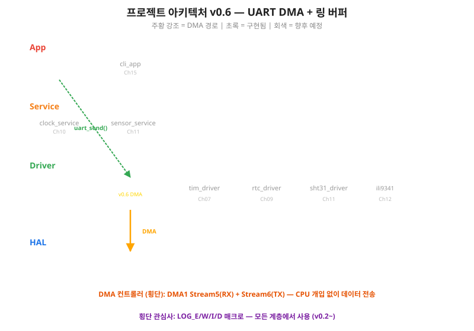
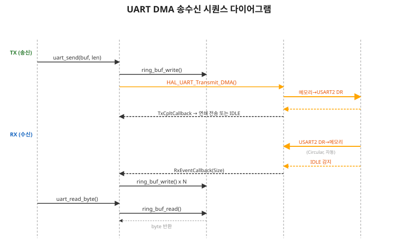
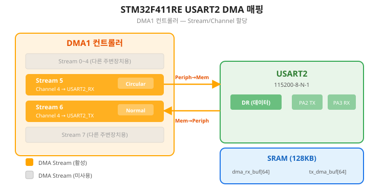
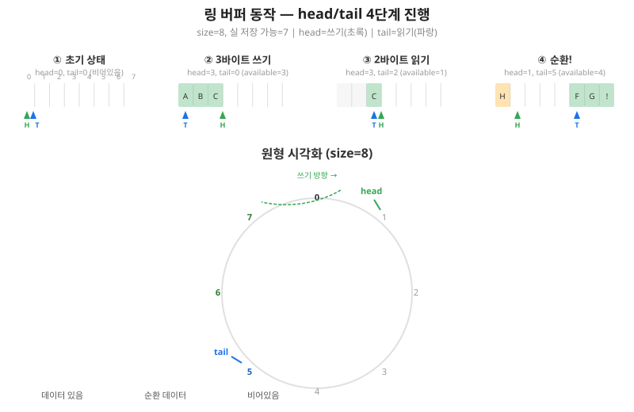
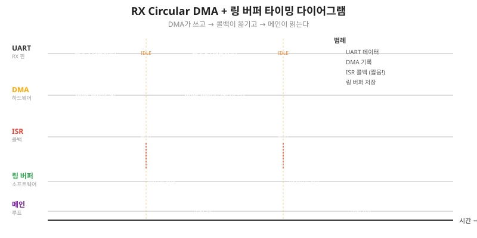
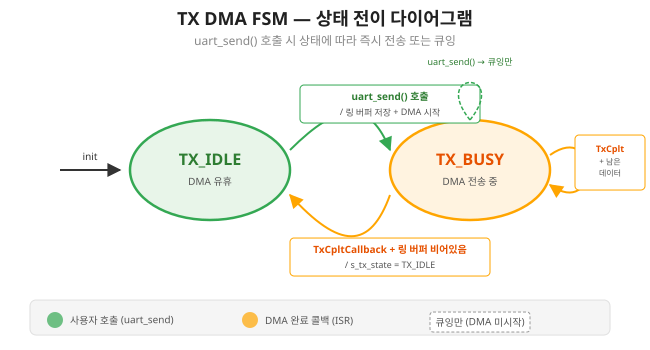
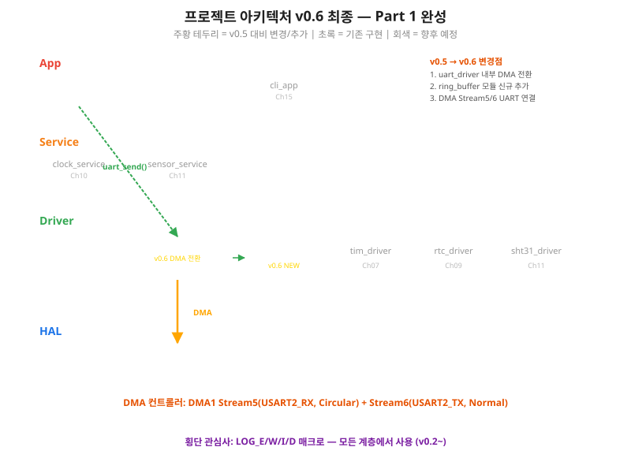

CPU를 완전히 해방하라 — DMA로 UART 송수신을 자동화하고, 링 버퍼로 데이터를 안전하게 관리한다
여기까지 온 여러분의 성과를 확인합시다. Ch01에서 GPIO/EXTI, Ch02에서 로그 시스템, Ch03에서 4계층 아키텍처, Ch04에서 UART Driver, Ch05에서 DMA 아키텍처까지 완성했습니다. 5개 챕터, 5개의 핵심 역량이 쌓였습니다. 이제 Part 1의 마지막 블록을 올릴 차례입니다.
Ch04에서 우리는 uart_send()와 uart_read_byte()를 만들었습니다.
송신은 폴링, 수신은 1바이트 인터럽트.
동작은 하지만, Ch05에서 배운 관점으로 다시 보면 문제가 보입니다.
HAL_UART_Transmit()은 블로킹 호출입니다.
100바이트를 115200bps로 보내는 8.7ms 동안 CPU는 멈춥니다.
수신도 마찬가지입니다.
HAL_UART_Receive_IT()는 매 바이트마다 인터럽트를 발생시킵니다.
초당 11,520바이트를 수신하면 11,520번의 인터럽트가 발생합니다.
Ch05에서 우리는 이 문제의 해결사를 이미 만났습니다. DMA — CPU 대신 데이터를 옮기는 서빙 로봇. Ch05에서는 메모리 간 복사(Mem-to-Mem)로 DMA를 처음 체험했습니다. 이제 그 DMA를 UART에 연결합니다.
이 챕터가 끝나면 놀라운 일이 벌어집니다.
uart_send(), uart_read_byte() — Ch04와 동일한 함수 이름이것이 Ch03에서 설계한 레이어드 아키텍처의 최강 실증입니다. "내부 구현을 교체해도 상위 레이어는 영향받지 않는다" — 글로만 읽던 원칙을 직접 체험합니다.
Ch06은 Driver 레이어의 uart_driver 내부 구현을 DMA로 교체합니다.
상위 레이어(App)에 노출되는 인터페이스는 Ch04와 동일합니다.

아래 헤더는 Ch04에서 작성한 것과 완전히 동일합니다. DMA 전환 후에도 한 줄도 변경하지 않습니다.
/* uart_driver.h — 공개 인터페이스 (Ch04 이후 불변) */
void uart_driver_init(void);
uart_status_t uart_send(const uint8_t *buf, uint16_t len);
uart_status_t uart_send_string(const char *str);
uint16_t uart_available(void);
uint8_t uart_read_byte(void);

이 챕터를 완료하면 다음을 할 수 있습니다.
HAL_UARTEx_ReceiveToIdle_DMA 등)의 호출 순서와 콜백 흐름을 설명할 수 있다.Ch05에서 DMA의 3가지 전송 모드를 배웠습니다: Mem-to-Mem, Mem-to-Periph, Periph-to-Mem. UART DMA는 나머지 두 모드를 사용합니다.
STM32F411RE의 DMA 컨트롤러는 DMA1과 DMA2, 총 2개입니다. 각 컨트롤러는 8개의 Stream(0~7)을 가지며, 각 Stream은 8개의 Channel(0~7)을 선택할 수 있습니다. USART2는 다음과 같이 매핑됩니다.

| 방향 | DMA | Stream | Channel | HAL API |
|---|---|---|---|---|
| RX (수신) | DMA1 | Stream 5 | Channel 4 | HAL_UARTEx_ReceiveToIdle_DMA() |
| TX (송신) | DMA1 | Stream 6 | Channel 4 | HAL_UART_Transmit_DMA() |
Ch05에서 DMA Normal 모드를 사용했습니다. 전송이 끝나면 DMA가 멈추고, 다시 시작하려면 재호출해야 합니다. UART 수신에는 이 방식이 불편합니다. 데이터가 언제, 얼마나 올지 모르기 때문입니다.
Circular 모드는 전송이 끝나면 자동으로 처음부터 다시 시작합니다. DMA 버퍼를 원형으로 계속 채우며, Half-Transfer와 Transfer-Complete 두 번의 콜백을 발생시킵니다.
Circular DMA는 버퍼를 계속 채우지만, 한 가지 문제가 있습니다. "수신이 완료되었다"를 어떻게 알 수 있을까요? UART는 패킷 프로토콜이 아니라서, 데이터 길이가 정해져 있지 않습니다.
답은 IDLE Line 감지입니다. UART 라인에서 1프레임(약 87us @115200bps) 이상 데이터가 없으면, 하드웨어가 "IDLE" 플래그를 세웁니다. 이것이 곧 "상대방이 보내기를 멈췄다"는 신호입니다.
HAL은 이 IDLE 감지를 HAL_UARTEx_ReceiveToIdle_DMA()로 제공합니다.
이 함수는 DMA 수신을 시작하면서 IDLE 인터럽트도 함께 활성화합니다.
데이터가 들어오면 DMA가 자동으로 버퍼에 기록하고,
IDLE이 감지되면 HAL_UARTEx_RxEventCallback()을 호출합니다.
/* IDLE Line 감지 DMA 수신 시작 — 핵심 한 줄 */
HAL_UARTEx_ReceiveToIdle_DMA(&huart2, dma_rx_buf, DMA_RX_BUF_SIZE);
/* 콜백: IDLE 감지 또는 Half/Complete 전송 시 호출 */
void HAL_UARTEx_RxEventCallback(UART_HandleTypeDef *huart, uint16_t Size)
{
/* Size = 실제 수신된 바이트 수 */
/* 여기서 DMA 버퍼 → 링 버퍼로 복사 */
}
DMA가 데이터를 자동으로 메모리에 기록한다는 것은 알았습니다. 그런데 DMA가 쓰는 속도와 CPU가 읽는 속도가 다르면 어떻게 될까요? DMA가 빠르게 데이터를 채우는 동안 CPU가 아직 이전 데이터를 처리하고 있다면, 데이터가 덮어씌워질 수 있습니다.
이 문제를 해결하는 자료구조가 링 버퍼(Ring Buffer)입니다.
Ch04에서 우리는 이미 간이 링 버퍼를 사용했습니다 — s_rx_buf[128]에 s_rx_head와 s_rx_tail을 두고 순환시켰죠.
하지만 그때는 버퍼 크기 128바이트에 에러 처리도 없는 최소 구현이었습니다.
이제 정식 범용 링 버퍼 모듈로 승격시킵니다.
링 버퍼의 핵심은 두 개의 인덱스입니다.
데이터를 쓰면 head가 전진하고, 데이터를 읽으면 tail이 전진합니다. 둘 다 배열 끝에 도달하면 0으로 돌아갑니다.

링 버퍼에서 가장 중요한 판별은 "비어있는가?"와 "가득 찼는가?"입니다.
head == tail — 쓴 만큼 다 읽었다(head + 1) % size == tail — head가 한 칸 더 가면 tail과 만난다"가득 참" 조건에서 한 칸을 비워두는 이유가 있습니다. 만약 head와 tail이 같으면 "비어있음"과 "가득 참"을 구별할 수 없기 때문입니다. 이 방식에서는 size 크기 배열에 실제 저장 가능한 데이터는 size - 1개입니다.
"배열 끝에서 처음으로 돌아간다"를 코드로 어떻게 표현할까요? 모듈로(%) 연산입니다.
/* 핵심 한 줄: 인덱스 순환 */
next_index = (current_index + 1) % buffer_size;
시계 바늘을 생각하세요.
12시에서 1을 더하면? 1시입니다 (13이 아닙니다).
이것이 모듈로 12 연산입니다: 13 % 12 = 1.
버퍼 크기가 8이면, 인덱스 7 다음은 (7 + 1) % 8 = 0 — 처음으로 돌아갑니다.
개념을 이해했으니 코드로 옮깁시다.
겁먹지 마세요 — 핵심은 3가지 함수뿐입니다: write, read, available.
먼저 자연어로 동작을 정의합니다.
/* === 링 버퍼 의사코드 === */
/* write(byte):
* 1) next = (head + 1) % size
* 2) if next == tail → 가득 참, 실패 반환
* 3) buf[head] = byte
* 4) head = next
* 5) 성공 반환
*/
/* read(byte_out):
* 1) if head == tail → 비어있음, 실패 반환
* 2) *byte_out = buf[tail]
* 3) tail = (tail + 1) % size
* 4) 성공 반환
*/
/* available():
* return (head - tail + size) % size
*/
/* ch06_01_ring_buffer.h — 링 버퍼 구조체 */
#include <stdint.h>
#include <stdbool.h>
typedef struct {
uint8_t *buf; /* 외부에서 제공하는 배열 포인터 */
uint16_t size; /* 배열 크기 (실 저장량 = size - 1) */
volatile uint16_t head; /* 쓰기 인덱스 */
volatile uint16_t tail; /* 읽기 인덱스 */
} ring_buffer_t;
volatile이 붙은 이유가 중요합니다.
head는 ISR(인터럽트 서비스 루틴)에서 변경하고,
tail은 메인 루프에서 변경합니다.
volatile이 없으면 컴파일러가 최적화로 값을 캐시에 고정해 버려, 변경을 감지하지 못합니다.
/* ring_buffer.c — 핵심 3가지 함수 */
#include "ch06_01_ring_buffer.h"
#include "log.h"
void ring_buf_init(ring_buffer_t *rb, uint8_t *buf, uint16_t size)
{
rb->buf = buf;
rb->size = size;
rb->head = 0;
rb->tail = 0;
LOG_D("ring_buf 초기화: size=%d, 실저장=%d", size, size - 1);
}
bool ring_buf_write(ring_buffer_t *rb, uint8_t byte)
{
uint16_t next = (rb->head + 1) % rb->size;
if (next == rb->tail) {
LOG_W("ring_buf 오버플로: head=%d, tail=%d",
rb->head, rb->tail);
return false; /* 가득 참 */
}
rb->buf[rb->head] = byte;
rb->head = next;
return true;
}
bool ring_buf_read(ring_buffer_t *rb, uint8_t *byte)
{
if (rb->head == rb->tail) {
return false; /* 비어있음 */
}
*byte = rb->buf[rb->tail];
rb->tail = (rb->tail + 1) % rb->size;
return true;
}
uint16_t ring_buf_available(const ring_buffer_t *rb)
{
return (rb->head - rb->tail + rb->size) % rb->size;
}
30줄도 안 되는 코드입니다.
축하합니다 — 여러분이 방금 구현한 것은 Linux 커널의 kfifo와 원리가 동일한 자료구조입니다.
링 버퍼에서 "오버플로우"라는 단어가 두 가지 맥락으로 사용됩니다. 혼동하지 마세요.
| 구분 | SW 오버플로우 | HW ORE (Overrun Error) |
|---|---|---|
| 원인 | 링 버퍼에서 head가 tail을 추월 | USART DR 레지스터를 읽기 전에 다음 바이트 도착 |
| 감지 | (next_head == tail) |
HAL Error Callback (ORE 플래그) |
| 해결 | 버퍼 크기 증가 또는 소비 속도 향상 | DMA 사용 (자동으로 DR 읽기) |
링 버퍼를 손에 넣었으니, 이제 DMA와 연결합니다. 이 절이 Ch06의 핵심 실습입니다. Ch05에서 배운 DMA 콜백 패턴이 여기서 다시 등장합니다.
RX DMA의 데이터 흐름은 3단계입니다.
dma_rx_buf[])uart_read_byte() → 링 버퍼에서 1바이트 꺼내기
Ch05의 DMA 설정에 추가로 USART2 DMA를 설정합니다.
/* ch06_02_uart_rx_dma.c — RX Circular DMA + IDLE 감지 */
#include "uart_driver.h"
#include "ch06_01_ring_buffer.h"
#include "main.h"
#include "log.h"
extern UART_HandleTypeDef huart2;
/* DMA 하드웨어 버퍼 (Circular) */
#define DMA_RX_BUF_SIZE 64
static uint8_t s_dma_rx_buf[DMA_RX_BUF_SIZE];
/* 소프트웨어 링 버퍼 */
#define APP_RX_BUF_SIZE 256
static uint8_t s_app_rx_mem[APP_RX_BUF_SIZE];
static ring_buffer_t s_rx_ring;
/* 이전 DMA 위치 추적 */
static uint16_t s_rx_old_pos = 0;
/* 초기화 */
void uart_rx_dma_init(void)
{
ring_buf_init(&s_rx_ring, s_app_rx_mem, APP_RX_BUF_SIZE);
s_rx_old_pos = 0;
/* ★ Circular DMA + IDLE 감지 시작 ★ */
HAL_UARTEx_ReceiveToIdle_DMA(&huart2,
s_dma_rx_buf,
DMA_RX_BUF_SIZE);
/* Half-Transfer 인터럽트 비활성화 (IDLE만 사용) */
__HAL_DMA_DISABLE_IT(huart2.hdmarx, DMA_IT_HT);
LOG_I("UART RX DMA 초기화 (Circular, IDLE감지)");
}
/* IDLE 또는 DMA 완료 콜백 */
void HAL_UARTEx_RxEventCallback(UART_HandleTypeDef *huart,
uint16_t Size)
{
if (huart->Instance != USART2) return;
uint16_t new_pos = Size; /* DMA가 기록한 위치 */
if (new_pos != s_rx_old_pos) {
if (new_pos > s_rx_old_pos) {
/* 연속 구간: old_pos ~ new_pos */
for (uint16_t i = s_rx_old_pos; i < new_pos; i++) {
ring_buf_write(&s_rx_ring, s_dma_rx_buf[i]);
}
} else {
/* 순환 발생: old_pos ~ 끝 + 0 ~ new_pos */
for (uint16_t i = s_rx_old_pos; i < DMA_RX_BUF_SIZE; i++) {
ring_buf_write(&s_rx_ring, s_dma_rx_buf[i]);
}
for (uint16_t i = 0; i < new_pos; i++) {
ring_buf_write(&s_rx_ring, s_dma_rx_buf[i]);
}
}
s_rx_old_pos = new_pos;
if (s_rx_old_pos >= DMA_RX_BUF_SIZE) {
s_rx_old_pos = 0;
}
}
LOG_D("RX 이벤트: pos=%d, available=%d",
new_pos, ring_buf_available(&s_rx_ring));
}
코드에서 가장 중요한 부분은 순환 처리입니다.
DMA Circular 모드에서 버퍼 끝을 넘으면 new_pos가 old_pos보다 작아집니다.
이때 "끝까지 + 처음부터"로 나누어 복사해야 합니다.
수신은 DMA로 전환했습니다.
이제 송신도 바꿀 차례입니다.
Ch04에서 HAL_UART_Transmit()(폴링)을 사용했던 부분을
HAL_UART_Transmit_DMA()로 교체합니다.
TX DMA는 RX와 다른 고민이 있습니다.
uart_send()가 연속으로 호출되면 어떻게 해야 할까요?
DMA는 한 번에 하나의 전송만 처리합니다.
이전 전송이 완료되기 전에 새 데이터가 들어오면 큐잉이 필요합니다.
해결책: TX 링 버퍼 + FSM(유한 상태 머신)

/* ch06_03_uart_tx_dma.c — TX DMA + FSM */
#include "uart_driver.h"
#include "ch06_01_ring_buffer.h"
#include "main.h"
#include "log.h"
extern UART_HandleTypeDef huart2;
/* TX 상태 FSM */
typedef enum {
TX_IDLE = 0,
TX_BUSY = 1
} tx_state_t;
static volatile tx_state_t s_tx_state = TX_IDLE;
/* TX 링 버퍼 */
#define TX_BUF_SIZE 512
static uint8_t s_tx_mem[TX_BUF_SIZE];
static ring_buffer_t s_tx_ring;
/* DMA 전송용 임시 버퍼 */
#define TX_DMA_CHUNK 64
static uint8_t s_tx_dma_buf[TX_DMA_CHUNK];
/* 내부: 링 버퍼에서 꺼내 DMA 전송 시작 */
static void tx_start_dma(void)
{
uint16_t count = 0;
uint8_t byte;
while (count < TX_DMA_CHUNK &&
ring_buf_read(&s_tx_ring, &byte)) {
s_tx_dma_buf[count++] = byte;
}
if (count > 0) {
s_tx_state = TX_BUSY;
HAL_UART_Transmit_DMA(&huart2, s_tx_dma_buf, count);
LOG_D("TX DMA 시작: %d바이트", count);
} else {
s_tx_state = TX_IDLE;
}
}
/* 공개 API: 데이터 송신 */
uart_status_t uart_tx_dma_send(const uint8_t *buf, uint16_t len)
{
/* 링 버퍼에 저장 */
for (uint16_t i = 0; i < len; i++) {
if (!ring_buf_write(&s_tx_ring, buf[i])) {
LOG_W("TX 버퍼 오버플로: %d/%d 저장", i, len);
break;
}
}
/* ★ Critical Section: 상태 확인 + DMA 시작 ★ */
__disable_irq();
if (s_tx_state == TX_IDLE) {
tx_start_dma();
}
__enable_irq();
return UART_OK;
}
/* DMA 전송 완료 콜백 */
void HAL_UART_TxCpltCallback(UART_HandleTypeDef *huart)
{
if (huart->Instance != USART2) return;
/* ★ 링 버퍼에 남은 데이터가 있으면 연쇄 전송 ★ */
if (ring_buf_available(&s_tx_ring) > 0) {
tx_start_dma();
} else {
s_tx_state = TX_IDLE;
LOG_D("TX 완료, IDLE 복귀");
}
}
핵심은 HAL_UART_TxCpltCallback()입니다.
DMA 전송이 끝날 때마다 링 버퍼를 확인해서 남은 데이터가 있으면 자동으로 다음 전송을 시작합니다.
이 콜백 연쇄(chaining) 패턴은 Ch05의 DMA 콜백과 같은 원리입니다.
/* _write 오버라이드 — printf → TX DMA */
int _write(int file, char *ptr, int len)
{
(void)file;
uart_tx_dma_send((const uint8_t *)ptr, (uint16_t)len);
return len;
}
Ch04에서는 _write()가 HAL_UART_Transmit()(블로킹)을 호출했습니다.
이제 DMA 버전으로 교체하면 printf()가 논블로킹이 됩니다.
데이터는 링 버퍼에 들어가고, DMA가 백그라운드에서 전송합니다.
§6.2~6.4에서 만든 링 버퍼, RX DMA, TX DMA를 하나로 합칩니다. 이것이 uart_driver v0.6 — Ch04의 v0.4에서 내부만 교체한 드라이버입니다.
uart_driver.h를 열어보세요.
Ch04에서 작성한 그대로입니다.
/* uart_driver.h — Ch04 이후 불변 */
void uart_driver_init(void);
uart_status_t uart_send(const uint8_t *buf, uint16_t len);
uart_status_t uart_send_string(const char *str);
uint16_t uart_available(void);
uint8_t uart_read_byte(void);
App 레이어 코드는 한 줄도 바꿀 필요가 없습니다.
uart_send("Hello", 5)를 호출하면 v0.4에서는 폴링으로, v0.6에서는 DMA로 전송됩니다.
이것이 Ch03에서 배운 캡슐화(Encapsulation)의 실제 가치입니다.
통합 드라이버는 ch06_04_uart_driver_v2.c에 있습니다.
§6.2~6.4의 코드를 하나의 파일에 합치고, 기존 API 함수명에 맞춰 래핑합니다.
/* uart_driver.c (v0.6) — 핵심 변경 요약 */
/* ① 초기화: 인터럽트 수신 → DMA Circular 수신 */
void uart_driver_init(void)
{
ring_buf_init(&s_rx_ring, ...);
ring_buf_init(&s_tx_ring, ...);
HAL_UARTEx_ReceiveToIdle_DMA(&huart2, ...);
__HAL_DMA_DISABLE_IT(huart2.hdmarx, DMA_IT_HT);
LOG_I("uart_driver v0.6 (DMA) 초기화 완료");
}
/* ② 송신: 폴링 → TX DMA + 링 버퍼 */
uart_status_t uart_send(const uint8_t *buf, uint16_t len)
{
/* 링 버퍼에 저장 → DMA 시작 */
}
/* ③ 수신: 1바이트 IT → Circular DMA + 링 버퍼 */
uint8_t uart_read_byte(void)
{
uint8_t byte;
if (ring_buf_read(&s_rx_ring, &byte)) return byte;
return 0;
}
DMA와 CPU가 동시에 링 버퍼에 접근하면 경쟁 조건(Race Condition)이 발생할 수 있습니다.
우리의 링 버퍼는 단일 생산자-단일 소비자(SPSC) 구조이기 때문에,
volatile만으로 대부분 안전합니다.
단, TX 시작 판단(s_tx_state 체크)에서는 주의가 필요합니다.
uart_send()에서 상태를 확인하는 도중 TxCplt 인터럽트가 발생하면 문제가 생깁니다.
이 경우 Critical Section으로 보호합니다.
/* TX 시작 시 Critical Section 적용 */
uart_status_t uart_send(const uint8_t *buf, uint16_t len)
{
/* 링 버퍼에 데이터 저장 (ISR 간섭 없음) */
for (uint16_t i = 0; i < len; i++) {
ring_buf_write(&s_tx_ring, buf[i]);
}
/* ★ 상태 확인 + DMA 시작은 원자적으로 ★ */
__disable_irq();
if (s_tx_state == TX_IDLE) {
tx_start_dma();
}
__enable_irq();
return UART_OK;
}
이론으로 "DMA가 빠르다"고 했습니다.
직접 측정해 봅시다.
Ch05에서 사용한 DWT_CYCCNT(사이클 카운터)로 CPU 점유 시간을 비교합니다.
/* ch06_05_performance_test.c — 폴링 vs DMA 비교 (발췌) */
/* 1) 폴링: CPU가 전송 완료까지 대기 */
start = DWT->CYCCNT;
HAL_UART_Transmit(&huart2, test_buf, 100, 100);
polling_cycles = DWT->CYCCNT - start;
/* 2) DMA: DMA 시작만 (완료는 DMA 하드웨어) */
start = DWT->CYCCNT;
uart_send(test_buf, 100); /* v0.6 DMA 드라이버 */
dma_cycles = DWT->CYCCNT - start;
| 방식 | CPU 점유 시간 | CPU 점유율 | 특징 |
|---|---|---|---|
| 폴링 | ~870,000 cycles (8.7ms) | ~100% | 단순, 블로킹 |
| DMA | ~500 cycles (5us) | < 0.1% | 시작만, 나머지 하드웨어 |
DMA 방식에서 CPU가 하는 일은 "DMA에게 시작을 지시하는 것"뿐입니다. 100바이트든 1000바이트든 CPU 점유 시간은 거의 동일합니다. 나머지는 DMA 하드웨어가 백그라운드에서 처리합니다.
Part 1을 마무리하며 아키텍처의 진화를 되돌아봅시다.
| 버전 | 챕터 | 추가된 것 | 핵심 성취 |
|---|---|---|---|
| v0.1 | Ch01 | GPIO/EXTI | 버튼 → LED 제어 |
| v0.2 | Ch02 | Log 시스템 | SWO/ITM printf |
| v0.3 | Ch03 | 4계층 아키텍처 | 설계 원칙 수립 |
| v0.4 | Ch04 | UART Driver | PC 시리얼 통신 |
| v0.5 | Ch05 | DMA 아키텍처 | Mem-to-Mem 성능 측정 |
| v0.6 | Ch06 | UART DMA + 링 버퍼 | 비동기 통신 완성 |

Part 0(기반 구축) + Part 1(통신 + DMA)을 통해 우리는 4가지 프로토타입을 만들었습니다.
그리고 무엇보다, Ch03에서 그린 아키텍처 설계도가 실제로 작동한다는 것을 증명했습니다.
Ch04의 uart_driver.h는 Ch06에서 한 줄도 바뀌지 않았습니다.
"레이어드 아키텍처의 캡슐화" — 교과서에서 읽던 원칙이 내 손으로 만든 코드에서 실현되었습니다.
이 챕터 완료 후 전체 아키텍처에 UART DMA Driver + 링 버퍼가 추가되었습니다.
Driver 레이어의 uart_driver 내부가 인터럽트 기반에서 DMA 기반으로 교체되었습니다.
uart_driver.h와 Ch06의 uart_driver.h가 동일한 이유를 레이어드 아키텍처 캡슐화 원칙으로 설명하시오.
ring_buf_available()의 반환값을 계산하시오.
HAL_UART_Transmit_DMA()만 사용하면 어떤 문제가 발생하는지 시나리오를 작성하시오.